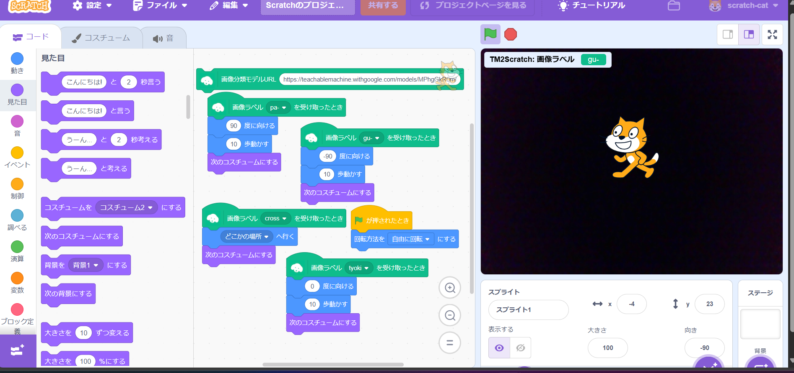
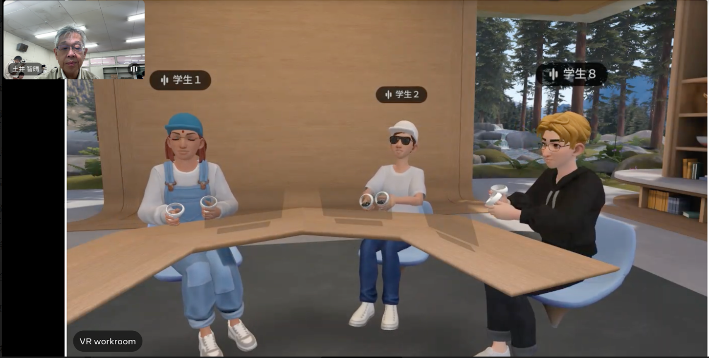

第2週目
2-1 2週目のレポートをHTMLで作る
1.内容
写真をホームページに反映させる方法や改行の方法
2.感想
何故先生が決まった名前にするように指示していたのかが理解できて嬉しかったです。コードがたくさん出てきて、ウェブサイトをつくることが大変だと実感しました。
3. 2週目が完成した人は1週目のレポートも完成させる
2-2 機械学習体験

1.内容
ディープランニングや機械学習、AIについて
2.感想
AIがその時代の最新技術に呼ばれていると知って驚きました。最近のAIは、実験する台数やお金をかければより精度が上がることは解釈一致でした。
2-3 VR（バーチャルリアリティー：Virtual Reality）会議室の体験

1.内容
会議室にVR出入り、会話をする。
2.感想
しっかりと手を動かすことができるため、内容が伝わるのだと嬉しくなりました。しかし、表情はアバターの顔なので感情は伝わりにくいと感じました。